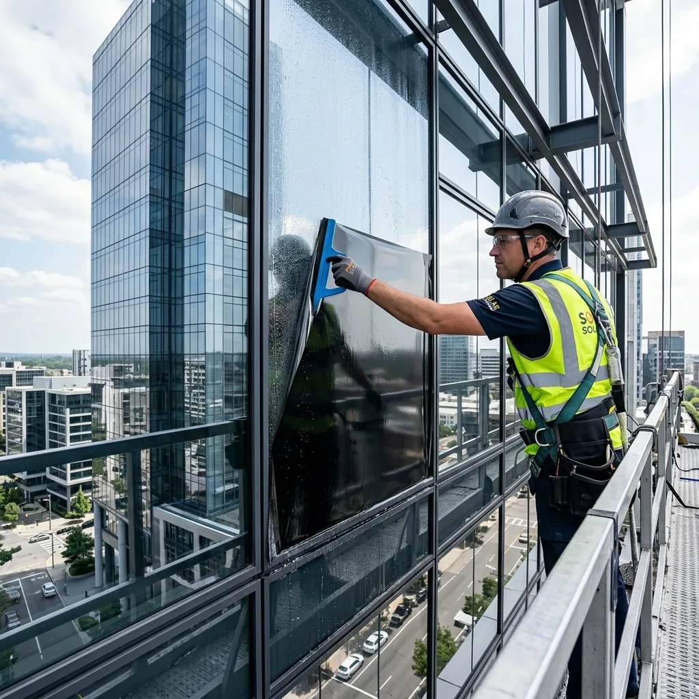

ÉCOUTER
Comprendre ce que vous voulez changer.
Nous discutons de l’usage du lieu, des moments d’inconfort, du niveau de confidentialité et des priorités. Cela évite de choisir une référence sur une seule apparence.
Notre savoir-faire d’installateur
Notre métier commence avant l’application du film. Nous rapprochons vos attentes des caractéristiques du vitrage et des conditions du lieu, puis nous fournissons et posons la solution retenue.

Votre besoin, compris.
Votre solution, mise en œuvre.
Chaleur, lumière, intimité ou sécurité.
Composition, traitements et contraintes de pose.
Conseil, fourniture, application et consignes.
Votre projet, étape par étape
Une baie vitrée de maison, une vitrine de commerce et une façade de bureaux ne posent pas les mêmes questions. Notre démarche donne un cadre lisible au choix de la solution.
Nous discutons de l’usage du lieu, des moments d’inconfort, du niveau de confidentialité et des priorités. Cela évite de choisir une référence sur une seule apparence.
Composition du verre, dimensions, orientation, traitements existants, ombrages et accès : ces éléments influencent la compatibilité et la mise en œuvre.
Le rendu, les bénéfices, les limites et le périmètre d’intervention sont expliqués. Les données utiles sont rattachées au produit et à ses conditions de mesure.
Nous organisons le chantier selon le lieu et réalisons la pose suivant les prescriptions de la référence. Les finitions et les conditions de séchage font partie de la préparation.
Nous expliquons quand nettoyer et comment entretenir le film, avec les indications et les documents adaptés à la solution installée.
Le terrain fait la différence
Nous utilisons des outils professionnels pour rapprocher les besoins réels des conditions du site. Il faut distinguer une observation du vitrage, une mesure de confort et une estimation énergétique.
Pour un projet qui demande un chiffrage d’efficacité, les hypothèses doivent être explicites : climat, surfaces, orientation, usage et équipements. Un résultat de fiche ne devient pas automatiquement un gain de température ou de facture.

Le conseil prend forme sur le vitrage
La préparation du verre est une étape essentielle. L’application doit respecter le support, les découpes, les joints et les prescriptions du film retenu.
Une façade accessible, un accueil en activité et une verrière de toiture n’appellent pas la même organisation. Nous préparons le périmètre et l’accès avec vous plutôt que de promettre un chantier identique partout.
Ce qui se passe après la pose
Le résultat s’accompagne de conditions de séchage et d’entretien. Les recommandations et garanties sont celles de la référence et de sa mise en œuvre.
Selon les conditions et le produit, l’aspect évolue pendant le séchage. Les indications propres au film sont communiquées lors de l’intervention.
Le délai avant nettoyage, les produits compatibles et les précautions de surface sont expliqués. Nous évitons de donner une règle universelle pour tous les films.
La référence installée, son périmètre de garantie et les préconisations utiles au projet servent de repères pour l’entretien et le suivi.
Votre installateur en Auvergne-Rhône-Alpes
Décrivez votre vitrage, vos attentes et votre lieu. Nous préparons ensemble la prochaine étape.
Des réponses pour décider
Oui. Notre accompagnement comprend le conseil, la sélection et la fourniture du film retenu, ainsi que la pose selon le périmètre du devis.
Oui. Votre point de départ peut être un problème de chaleur, d’éblouissement, d’intimité ou de sécurité. Notre rôle est de traduire ce besoin en une solution adaptée.
Une large gamme permet de répondre à de nombreuses situations, mais chaque compatibilité doit être vérifiée. Nous n’annonçons pas de film universel pour tous les supports.
L’organisation dépend du lieu, des accès et du périmètre. Nous étudions les conditions d’intervention pour tenir compte de votre activité, sans garantir le même déroulement sur tous les sites.
Le devis est gratuit et sans engagement. Le premier échange permet de comprendre le besoin et de préparer le périmètre de l’étude et de l’intervention.
Un besoin, plusieurs façons d’y répondre

Les apports solaires, le choix de lumière et l’étude du vitrage.
Découvrir
Anti-éclats, protection renforcée et mise en œuvre.
Découvrir
Température, ressenti, énergie : les bons repères pour comparer.
Découvrir